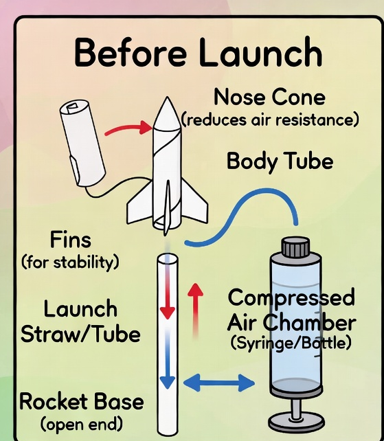
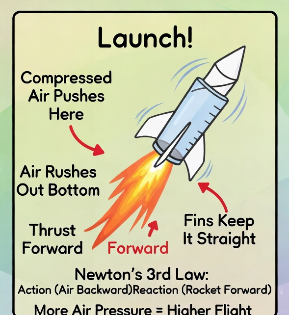

Students build lightweight rocket bodies from ~10 mm cardboard or plastic tubes, add nose cones and fins, then launch them with a compressed-air tank and adapter. The air pushes out the back (action) and the rocket flies forward (reaction) — that's Newton's third law! This 3–4 hour field trip covers the engineering design cycle: build, launch, redesign, and launch again. Younger students focus on build quality and observing flight; older students run fair tests by changing one variable at a time.
Schedule This Field TripIntroduction & Safety
Young engineers build rockets from cardboard tubes, nose cones, and fins — then watch them soar on compressed air. The launch system uses an air compressor tank with an adapter that fits ~10 mm rocket bodies. Adults handle all launch controls; students hand off rockets and record results.
Safety Rules
- Adults only operate the compressor valve and launch trigger — no exceptions.
- Clear range — all spectators stay behind a marked line. No one goes downrange.
- Eye protection for the launch crew and nearby students.
- Never aim at people — rockets go up and away only.
- Inspect rockets — sealed nose, secure fins, tube fits adapter without forcing.
- Pressure ceiling: 120 PSI — adults set and verify before the first launch. Never exceed.
- 1 adult per 5 students at the launch line at all times.
- Recover rockets only when the launch adult calls "safe."
Materials
| Material | What it is for |
|---|---|
| ~10 mm cardboard or plastic tubes | Rocket body — must fit the compressor adapter |
| Nose cones (paper, tape, or clay) | Sealed front of the rocket for aerodynamics |
| Fins (cardstock or plastic) | Keep the rocket flying straight and stable |
| Air compressor tank + adapter | Launch system — adult operated, ≤120 PSI |
| Scissors and tape | Cut fins and assemble the rocket |
| Measuring tape / distance markers | Record how far each rocket flies |
| Clipboards and data sheets | Record launch results and redesign notes |
| Eye protection | Safety gear for launch crew and nearby students |
Watch the video: STEM Class Ideas: Compressed Air Rocket Launcher (Creation Crate)
How Rockets Fly — Newton's Laws (Elementary)

Law 1 — Still or Moving
An object stays still or keeps moving the same way unless a force changes it. On the launch pad, the rocket waits until the air push starts. Once it launches, gravity and air slow it down.
Law 2 — Push and Mass (Grades 4–5)
A stronger push changes motion more. A heavier rocket is harder to speed up. Students can compare light vs slightly weighted noses (soft, safe weights only) to see the difference.
Law 3 — Action and Reaction (Core for This Trip)
Push air one way → the rocket goes the other way. The compressed air rushes out the back of the tube (action), and the rocket flies forward (reaction). That's Newton's third law — the same idea that powers real rockets!
Classroom Phrases
- "Equal and opposite" — the push back equals the push forward.
- "Thrust is the push" — the air pushing out creates thrust.
- "Fins help us steer" — fins keep the rocket stable so it flies straight.
Sources: TeachEngineering Rockets unit (Grades 3–5), NASA GRC Paper Rockets
Design Variables — What Students Can Change
Rocket bodies are ~10 mm tubes sized to the compressor adapter. Students can change design variables within material limits — but launch pressure is set by adults only (≤120 PSI) and is never a student variable.
| Variable | What to try | What to watch |
|---|---|---|
| Fin size / count / placement | 3 vs 4 fins; larger vs smaller | Straight vs wobbly flight |
| Nose shape / mass | Soft cone; light padding | Distance, tip-over, safety |
| Body length | Shorter vs longer tube (adapter must still fit) | Stability vs distance |
| Straightness / seals | Tape seams, true fins | Leaks waste thrust |
| Launch aim / angle | Adult sets safe angles | Range distance vs height |
Fair-Test Habit
Change one variable at a time when comparing. Record the distance or landing zone. Redesign once and launch again to see if it improved. That's the engineering design cycle!
Sources: TeachEngineering Strawkets, NASA GRC Paper Rockets, NGSS 3-5-ETS1-3
Field Trip Schedule (3–4 Hours)
This 3–4 hour field trip follows the engineering design cycle: build, launch, redesign, launch again. Times are flexible based on group size.
| Block | Time | What students do |
|---|---|---|
| 1. Welcome & Hook | 15–20 min | What is a rocket? Optional 2–3 min video clip, then a safe air-push demo. Goals for the day. |
| 2. Safety Briefing | 15 min | Range rules, eye protection, adult launch only, ≤120 PSI, 1:5 at launch line. |
| 3. Science Mini-Lesson | 20–25 min | Newton's 3rd law + thrust + fins. Tiered: pictures for grades 2–3; variables for grades 4–5. |
| 4. Build 1 | 45–60 min | Build ~10 mm tube body, nose cone, and fins. Fit check on the adapter. |
| 5. Launch Rotation 1 | 40–50 min | First flights! Record landing zone or distance. ≤5 students per adult at the pad. |
| 6. Snack / Movement | 15 min | Break and stretch. |
| 7. Redesign | 30–40 min | Change one variable. Rebuild with improvements. |
| 8. Launch Rotation 2 | 30–40 min | Compare results with first launch. Did the redesign work? |
| 9. Share-Out & Clean | 20–25 min | What worked? Engineers redesign. Pack up. |
Total: ~3–4 hours depending on group size and rotations.
Tiering by Grade
| Grade Band | Emphasis |
|---|---|
| Grades 2–3 | Build quality, observe flight, "push / reaction" language, stickers and tallies for data |
| Grades 4–5 | One-variable fair tests, bar graphs and tables, explain thrust and fins, claim + evidence |
Launch Line Roles
| Role | Responsibility |
|---|---|
| Launch Adult | Loads rocket, confirms clear range, fires, announces "safe" |
| Spotter Adult | Watches spectators and recovery path |
| Student Flyer | Hands rocket to adult; records result on data sheet |
| Queue Captain | Keeps build groups rotating calmly |
Arizona Educational Standards
This field trip project aligns with Arizona standards across Science, Math, ELA, and Educational Technology for grades 2–5. Force-and-motion core ideas land hardest in grade 5; younger students still hit engineering design, measurement/data, and speaking/listening standards.
Science — Arizona Science Standards (2018)
5.P3U1.4: Obtain, analyze, and communicate evidence of the effects that balanced and unbalanced forces have on the motion of objects. Launch thrust vs gravity/drag; the rocket sits still until an unbalanced force acts on it; flight path discussion.
5.P3U2.5: Define problems and design solutions pertaining to force and motion. Build → launch → change one variable → redesign (fins, nose, length).
5.P4U1.6: Analyze and interpret data to determine how and where energy is transferred when objects move. Compressed-air push → rocket kinetic energy; compare landing zones and distances.
2.P1U1.1: Investigate that matter has mass, takes up space, and has observable properties. Light vs slightly weighted noses; "heavier is harder to speed up" for grades 2–3.
Mathematics — Arizona Math Standards (2016)
2.MD.A.1 / 2.MD.A.3 / 2.MD.A.4: Measure and estimate lengths; compare lengths. Tube length, fin size, distance markers.
2.MD.D.9 / 2.MD.D.10: Measurement data; picture and bar graphs. Land-zone tallies; simple class bar graph.
3.MD.B.3 / 3.MD.B.4: Scaled bar graphs; line plots from length data. Redesign comparison charts.
4.MD.A.1 / 4.MD.A.2: Unit conversions; real-world distance problems. Record distance in consistent units and compare flights.
English Language Arts — Arizona ELA Standards (2016)
2.SL.1–4 / 3.SL.1 / 4.SL.1 / 5.SL.1: Collaborative discussion. Safety briefing Q&A; end-of-day share-out "what worked."
2.W.2 / 3.W.2 / 4.W.2 / 5.W.2: Informative/explanatory writing. Optional clipboard: "My rocket changed ___ because ___."
Technology — Arizona Educational Technology Standards (2022)
K-2.4.a–c: Ask, test, and redesign using the design process. Build 1 → launch → redesign → launch 2.
3-5.4.a–d: Cyclical design process; prototypes; perseverance. Fair-test redesign under constraints.
K-2.5.b / 3-5.5.b: Organize and represent data. Distance or land-zone data sheets.
3-5.7.c: Team roles. Build teams and launch-line roles (1 adult : 5 students).
Sources: Arizona Science Standards (ADE 2018), Arizona Math Standards (2016), Arizona ELA Standards (2016), Arizona Educational Technology Standards (2022). Verified via Common Standards Project — re-check on ADE Standards & Practices before high-stakes adoption.
Build Your Rocket

Step 1: Build the Rocket Body
Start with a ~10 mm cardboard or plastic tube. Check that it fits the compressor adapter — it should slide on smoothly without forcing. This is your rocket's body.
Step 2: Add a Nose Cone
Make a cone from paper: cut a circle, cut a slit to the center, overlap the edges, and tape it into a cone shape. Attach it to the front of your tube. Make sure the nose is sealed — no air should leak out the front!
Step 3: Add Fins
Cut 3 or 4 fins from cardstock. Tape them evenly around the back of the tube. Fins keep your rocket flying straight. Try different sizes and shapes — that's a design variable you can test!
Step 4: Fit Check
Before launching, hand your rocket to the launch adult. They'll check that the tube fits the adapter, the nose is sealed, and the fins are secure.
Step 5: Launch!
Stand behind the safety line. The launch adult loads your rocket onto the pad, confirms the range is clear, and fires. Watch your rocket fly! Record where it lands on your data sheet.
Step 6: Redesign
Think about your first flight. Did it go straight? Did it fly far? Change one thing — maybe bigger fins, a lighter nose, or a shorter body. Rebuild and launch again. Compare your results!
Watch & Learn
These videos are great for classroom prep before your field trip or for the welcome hook at the start of the day.
| Video | Best for |
|---|---|
| Creation Crate — Compressed Air Rocket Launcher | Primary classroom demo — framing for a STEM class launcher day |
| Teach Beside Me — DIY Cardboard Tube Rocket Launcher for Kids | Cardboard-tube build excitement for grades 2–5 |
| BeardedScienceGuy — Paper Rockets for Under Five Dollars | Indoor science intro before outdoor launches |
| I Like To Make Stuff — How to Make an Air-Powered Rocket Launcher | Staff prep and older helper training |
Note: Some demo videos use PVC launchers or different pressures. Our system uses a compressor tank + adapter with ~10 mm tube rockets at ≤120 PSI. Use videos for build inspiration and activity framing, not as our hardware specs.
What Students Learn
- Newton's Third Law: Air pushes back → rocket goes forward. Equal and opposite forces.
- Forces and Motion: Thrust, gravity, and drag all act on the rocket during flight.
- Engineering Design: We followed the design cycle — plan, build, test, redesign, test again.
- Fair Testing: Change one variable at a time to compare results scientifically.
- Data Collection: Measure distance, record landing zones, and graph results.
- Teamwork: Launch-line roles, build teams, and shared responsibility for safety.
Great Job, Engineers! You designed, built, tested, and improved real rockets. That is what we do at Steamspace!
Full lesson plans, worksheets, and media are also available in the Steamspace Moodle course.